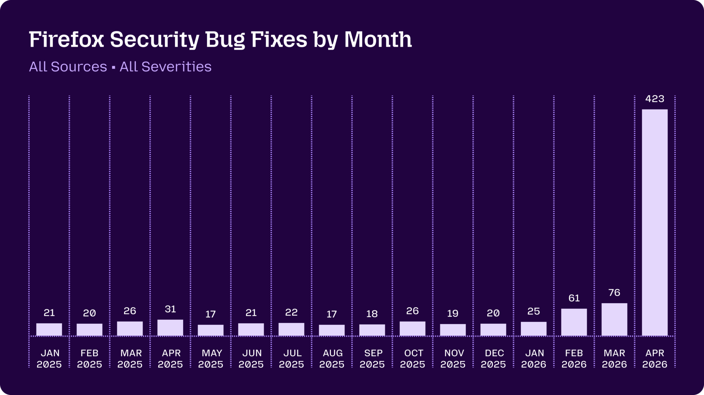
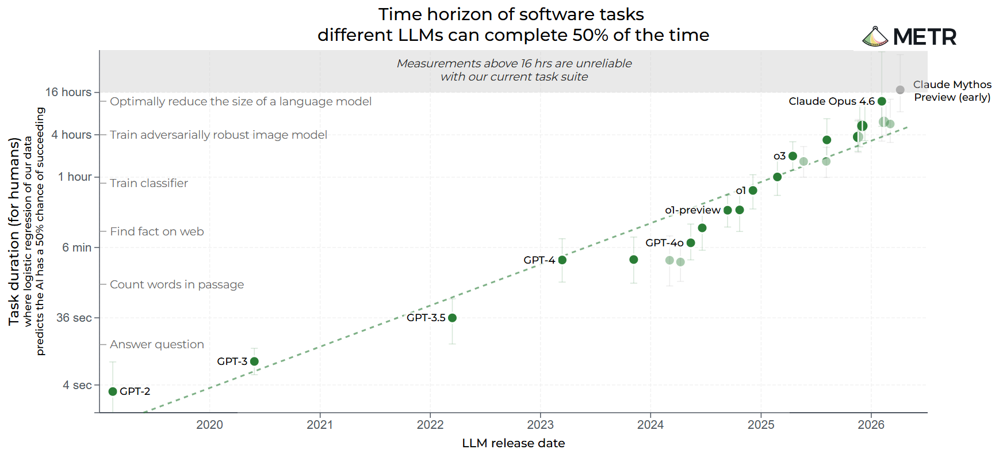

Mozilla published on May 7 how they used Claude Mythos Preview, a pre-release model, to find 271 bugs across the Firefox codebase. The chart below tells the story better than any headline.

That spike is what AI-assisted discovery looks like at scale. And Claude Mythos is still a preview. As frontier models mature, more teams will run experiments like this, and the lists of discovered bugs will get longer.
The fixing problem is a different story. That's where Kodah comes in. Every bug on that list represents 30 to 45 minutes of an engineer's time: investigating the root cause, writing a fix, making sure nothing else breaks.
Multiply that by 271.
That's not a tooling problem. That's a capacity problem.
Kodah automates the investigation and the first patch. Your engineers review the diff and merge.
How long can AI work alone?
Before showing what fixing looks like, it helps to understand where AI autonomy actually stands today. METR, an AI safety research organization, independently benchmarks how long AI agents can operate on complex, real software tasks before needing human input.

The practical implication: the same class of models that found Mozilla's 271 bugs can now execute multi-hour autonomous fix attempts. The tooling to go from "found a bug" to "here's a patch" is maturing fast. Teams that build a review pipeline now will be structurally ahead when the discovery rate keeps climbing.
We ran Kodah on Firefox
To show what the fix side looks like, we ran Kodah against the public Firefox repository on two real open bugs: both with fixes from Mozilla engineers available for comparison. One had been sitting open for three months. Both were fixed in under eleven minutes combined.
Bug 2014226 — Guard against redundant actor registration
Opened Feb 3, 2026 · Fix pushed May 9, 2026
A logic bug that had been sitting open for over three months. When an enterprise policy set TranslateEnabled: true, Firefox tried to register browser actors that were already registered via the default preference value. ChromeUtils.register* threw NotSupportedError every time, flooding the console with errors. No user-visible breakage, just a silent, ongoing error condition in production.
Kodah resolved it in 4 minutes and 21 seconds.
Mozilla engineers went further: introducing a stateful actorRegistered flag with closures applied consistently across every registration path, not just the direct call. Cleaner, more future-proof. Again: the right kind of decision to make in review.
Bug 2038139 — Bookmark autofill broken when history is disabled
Opened May 8, 2026 · Fix pushed May 9, 2026
A behavioral bug. In Firefox Nightly, typing a bookmarked domain in the address bar stopped autofilling when browsing history was disabled, or in private browsing mode. Type "moz" with places.history.enabled = false and a mozilla.org bookmark, and nothing autofills. The only workaround was disabling adaptive history entirely, which degraded the experience for everyone.
The root cause was in _getAdaptiveHistoryQuery: the SQL used an INNER JOIN with moz_inputhistory. No history rows, because the user disabled history, cleared it, or was in a private window, no join matches, no autofill result, even for sites the user had explicitly bookmarked.
Kodah's fix targeted the query directly:
Mozilla engineers fixed it one layer up: introducing an effectiveSources() helper that treats history as unavailable at the routing level, covering all three query generators, plus tests. The user-visible result is identical. The architectural difference is real, and it's exactly the kind of improvement that belongs in a code review, not in the initial investigation.
The honest math
Two bugs. Two correct fixes. Total time under 11 minutes.
| Bug | Opened | Fixed in |
|---|---|---|
| 2014226 — Actor registration | Feb 3, 2026 | 4m 21s |
| 2038139 — Bookmark autofill | May 8, 2026 | 6m 50s |
| Total | ~11 min |
Both fixes are slightly narrower in scope than what Mozilla's engineers produced. That's expected. Kodah generates a first viable patch: the engineer's job shifts from writing to reviewing. Faster, less draining, and far more scalable as AI-discovered bug volumes grow.
Mozilla's 271 bugs came from a preview model. More experiments like this are coming. The teams that build a fix review pipeline now will be ahead when the queue gets longer.
Two bugs. Eleven minutes. That's what the pipeline looks like.